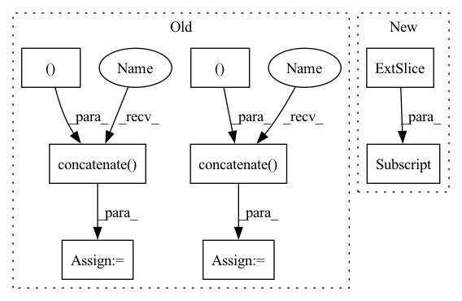

Pattern ID :27750
Before Change
def qrnn(ctx: Context, forget: jnp.ndarray, x: jnp.ndarray) -> jnp.ndarray:
dtype = forget.dtype
for i in range(int(math.log2(ctx.dims.sequence))):
x += jnp .concatenate( [jnp.zeros((x.shape[0], 2 ** i, x.shape[2] )), x[:, :-2 ** i] * forget[:, 2 ** i:]], 1)
forget *= jnp .concatenate( [jnp.ones((x.shape[0], 2 ** i, x.shape[2] )), forget[:, :-2 ** i]], 1)
return x.astype(dtype)
def qrnn_grad(ctx: Context, forget: jnp.ndarray, src: jnp.ndarray) -> jnp.ndarray:After Change
def qrnn(forget: jnp.ndarray, x: jnp.ndarray) -> jnp.ndarray:
dtype = forget.dtype
for i in range(int(math.log2(x.shape[1]))):
x = x.at[:, 2 ** i:] .add(x[:, :-2 ** i] * forget[:, 2 ** i:])
forget = forget.at[:, 2 ** i:].mul(forget[:, :-2 ** i])
return x.astype(dtype)
In pattern: SUPERPATTERN
Frequency: 3
Non-data size: 8
Instances Fragment ID: 82236422
Project Name: homebrewnlp/homebrewnlp-jax
Commit Name: 84d9968e588d94725c4e22a879b4ab65591138de
Time: 2022-08-27
Author: 39779310+ClashLuke@users.noreply.github.com
File Name: src/model/qrnn.py
M Class Name: AnonimousClass
N Class Name: AnonimousClass
M Method Name: qrnn(2)
N Method Name: qrnn(3)
M Parent Class:
N Parent Class:
M File Name: src/model/qrnn.py
N File Name: src/model/qrnn.py
M Start Line: 12
M End Line: 16
N Start Line: 14
N End Line: 16
Before Change
pred_epoch = pred
gr_truth_epoch = gr_truth
else:
pred_epoch = np.concatenate( (pred_epoch, pred ), axis = 0)
gr_truth_epoch = np.concatenate( (gr_truth_epoch, gr_truth ), axis = 0)
//the following line to empty the cache is helpful in order to
//reduce memory usage and avoid OOM error:
torch.cuda.empty_cache()After Change
start_row = batch_idx*self.batch_size
stop_row = min(start_row + self.batch_size, num_examples)
pred_epoch[start_row:stop_row,:] = pred //pred_epoch is e.g. [25355,80] and pred is e.g. [1,80] for a batch size of 1
gr_truth_epoch[start_row:stop_row,:] = gr_truth //gr_truth_epoch has same shape as pred_epoch
//the following line to empty the cache is helpful in order to
//reduce memory usage and avoid OOM error: Fragment ID: 82236449
Project Name: rachellea/pytorch-computer-vision
Commit Name: 92145aa25950504dbfaa3ac7ff86ddbeaa66a63f
Time: 2021-01-23
Author: rachel.draelos@gmail.com
File Name: src/run_experiment.py
M Class Name: DoExperiment
N Class Name: DoExperiment
M Method Name: iterate_through_batches(5)
N Method Name: iterate_through_batches(5)
M Parent Class: object
N Parent Class: object
M File Name: src/run_experiment.py
N File Name: src/run_experiment.py
M Start Line: 261
M End Line: 300
N Start Line: 263
N End Line: 300
Before Change
precision = {}
for i in range(r):
TP = out[i][i]
temp = np.concatenate( (out[0:i, :], out[i + 1:, :] ), axis=0)
sum_one = np.sum(temp, axis=0)
FP = sum_one[i]
temp2 = np.concatenate( (out[:, 0:i], out[:, i + 1:] ), axis=1)
FN = np.sum(temp2, axis=1)[i]
TN = temp2.reshape(-1).sum() - FN
iou_temp += (TP / (TP + FP + FN))
recall[i] = TP / (TP + FN)
precision[i] = TP / (TP + FP)After Change
for i in range(r):
TP = out[i][i]
FP = out[:,i].sum()-TP
FN = out[i,:] .sum()-TP
TN = out.sum()-TP-FP-FN
iou_temp += (TP / (TP + FP + FN))
recall[i] = TP / (TP + FN) Fragment ID: 82236462
Project Name: qiaofengsheng/pytorch-unet
Commit Name: a7bcba37566cfe3f32b96f423f824011165bdb6d
Time: 2023-03-15
Author: 735083049@qq.com
File Name: evaluation/get_evaluation.py
M Class Name: AnonimousClass
N Class Name: AnonimousClass
M Method Name: get_miou_recall_precision(3)
N Method Name: get_miou_recall_precision(3)
M Parent Class:
N Parent Class:
M File Name: evaluation/get_evaluation.py
N File Name: evaluation/get_evaluation.py
M Start Line: 17
M End Line: 35
N Start Line: 17
N End Line: 32
Before Change
def qrnn(ctx: Context, forget: jnp.ndarray, x: jnp.ndarray) -> jnp.ndarray:
dtype = forget.dtype
for i in range(int(math.log2(ctx.dims.sequence))):
x += jnp.concatenate( [jnp.zeros((x.shape[0], 2 ** i, x.shape[2] )), x[:, :-2 ** i] * forget[:, 2 ** i:]], 1)
forget *= jnp.concatenate( [jnp.ones((x.shape[0], 2 ** i, x.shape[2] )), forget[:, :-2 ** i]], 1)
return x.astype(dtype)
def qrnn_grad(ctx: Context, forget: jnp.ndarray, src: jnp.ndarray) -> jnp.ndarray:After Change
def qrnn(forget: jnp.ndarray, x: jnp.ndarray) -> jnp.ndarray:
dtype = forget.dtype
for i in range(int(math.log2(x.shape[1]))):
x = x.at[:, 2 ** i:] .add(x[:, :-2 ** i] * forget[:, 2 ** i:])
forget = forget.at[:, 2 ** i:].mul(forget[:, :-2 ** i])
return x.astype(dtype)
Fragment ID: 82236458
Project Name: homebrewnlp/homebrewnlp-jax
Commit Name: 84d9968e588d94725c4e22a879b4ab65591138de
Time: 2022-08-27
Author: 39779310+ClashLuke@users.noreply.github.com
File Name: src/model/qrnn.py
M Class Name: AnonimousClass
N Class Name: AnonimousClass
M Method Name: qrnn(2)
N Method Name: qrnn(3)
M Parent Class:
N Parent Class:
M File Name: src/model/qrnn.py
N File Name: src/model/qrnn.py
M Start Line: 12
M End Line: 16
N Start Line: 14
N End Line: 16